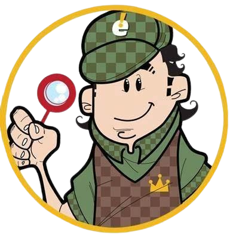
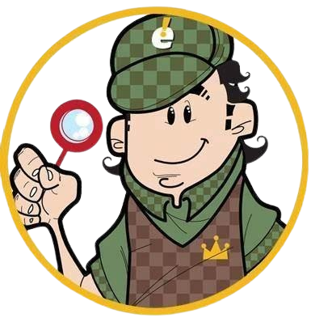

Ciência da Computação
DESCRIÇÃO
A profissão de Ciência da Computação abrange o estudo e a aplicação de princípios teóricos e práticos para resolver problemas computacionais.
Profissionais dessa área trabalham no desenvolvimento de software, sistemas de computação, algoritmos, inteligência artificial, redes, bancos de dados, segurança cibernética e muito mais.
Eles são responsáveis pela criação, manutenção e otimização de tecnologias que impactam diretamente a vida cotidiana, seja por meio de aplicativos, sistemas empresariais ou soluções inovadoras em diversos setores.
ONDE TRABALHA
A demanda de mercado de trabalho para um profissional de Ciência da Computação continua alta e tem se expandido ao longo dos últimos anos. Isso se deve ao crescimento acelerado de tecnologias emergentes, como inteligência artificial, big data, computação em nuvem, segurança cibernética, desenvolvimento de software e automação.
1. Tecnologia e Inovação: Empresas de diversos setores, como saúde, finanças, varejo, logística e até governo, estão cada vez mais adotando tecnologias avançadas para melhorar seus processos, criando uma enorme necessidade de profissionais qualificados em ciência da computação.
2. Especializações: Há uma demanda crescente por profissionais com habilidades específicas, como programação, análise de dados, inteligência artificial, aprendizado de máquina, blockchain, segurança cibernética e computação em nuvem.
PRINCIPAIS ATIVIDADES
As principais atividades de um cientista da computação envolvem uma combinação de pesquisa, desenvolvimento e aplicação de tecnologias computacionais em diversos contextos.
Algumas das principais atividades incluem: Pesquisa e Inovação, Desenvolvimento de Software, Análise de Dados, Modelagem e Simulação, Desenvolvimento de Algoritmos, Segurança da Informação, Computação Distribuída e Redes, Inteligência Artificial(AI) e Aprendizado de Máquinas, Interação Humano-Computador e Consultoria e Aplicação de Tecnologias
FICHA DO CURSO
Ingresso: Sisu
Onde: Campus do Pici em Fortaleza; Campus de Crateús; Campus de Quixadá; Campus de Russas;
Grau: Bacharelado.
Duração: 8 semestres.
Turno: Integral.
Número de vagas:
- Fortaleza – 60 por ano, com ingresso no 1º semestre;
- Crateús – 50 por ano, com ingresso no 1º semestre;
- Quixadá – 50 por ano, com ingresso no 1º semestre;
- Russas – 100 por ano (50 por semestre).
 
